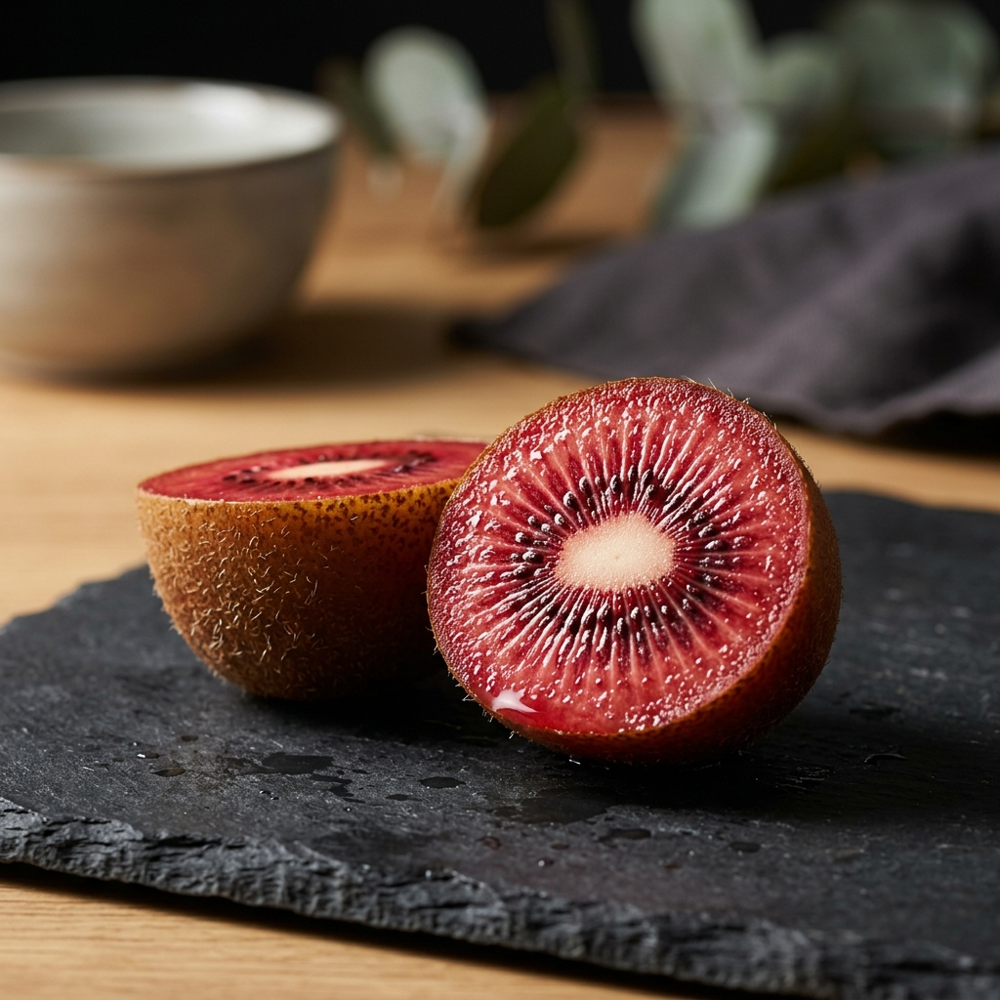

우리의 스토리
루비 키위는 수년간의 연구와 노력 끝에 탄생한 프리미엄 품종입니다. 우리는 가장 맛있는 과일을 식탁에 올리기 위해 끊임없이 노력합니다. 한 알 한 알 정성을 다해 수확한 루비 키위로 특별한 하루를 만들어보세요.
일반 키위에서는 느낄 수 없는 압도적인 당도와 루비처럼 빛나는 붉은 과육. 한 입 베어 무는 순간 퍼지는 풍부한 과즙을 경험하세요.
구매하기
일반 골드키위보다 훨씬 높은 브릭스(Brix)로 입안 가득 퍼지는 달콤함을 선사합니다.
비타민 C와 항산화 물질이 풍부하여 면역력 증진과 피로 회복에 탁월합니다.
깨끗한 자연 환경에서 정성껏 키워내어 남녀노소 누구나 안심하고 드실 수 있습니다.
루비 키위는 수년간의 연구와 노력 끝에 탄생한 프리미엄 품종입니다. 우리는 가장 맛있는 과일을 식탁에 올리기 위해 끊임없이 노력합니다. 한 알 한 알 정성을 다해 수확한 루비 키위로 특별한 하루를 만들어보세요.